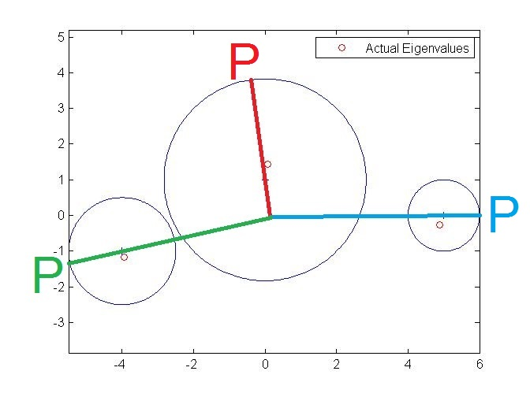

Linear Algebra
Subspaces
Theorem: subspace test. A subset $W$ of a vector space
$V$ is a subspace of $V$ iff the following hold:
Linear Transformations and Matrices
Dimension / rank nullity theorem
Theorem. Let V and W be vector spaces, and let $T:V\longrightarrow W$ be linear. If V is finite-dimensional, then $$\dim \ker T + \rank T = \dim V.$$
Special Matrix Functions
Proposition. If $A$ and $B$ are square matrices, then $\tr(AB) = \tr(BA)$ and $\tr A = \tr A^t.$
Change of Coordinate Matrix
Proposition. Let $B$ be an $n \times n$ invertible matrix. Then the map $$\Phi_B: M_{n\times n}(F) \longrightarrow M_{n\times n}(F)$$ defined by $$\Phi_B(A) = B^{-1} A B$$ is an isomorphism.
Proposition. For any invertible matrix $B$ there exist bases $\beta, \gamma$ s.t. $B = [I]^\beta_\gamma,$ i.e. every invertible matrix is a change of coordinates matrix.
Eigenvectors and Eigenvalues
Theorem: Diagonalizability. A linear operator $T$ on a finite-dimensional vector space $V$ is diagonalizable iff there exists an ordered basis $\beta$ for $V$ consisting of eigenvectors of $T.$ Furthermore, if $T$ is diagonalizable, $\beta = \{v_1,\ldots, v_n\}$ is an ordered basis of eigenvectors of $T,$ and $D = [T]_\beta,$ then $D$ is a diagonal matrix and $D_{jj}$ is the eigenvalue corresponding to $v_j$ for $1 \leq j \leq n.$
Proposition. Let $T$ be a linear operator on a finite-dimensional vector space $V,$ and let $\beta$ be an ordered basis for $V.$ Then $\lambda$ is an eigenvalue of $T$ iff it is an eigenvalue of $[T]_\beta.$
Corollary. Similar matrices have the same eigenvalues, but not necessarily the same eigenvectors.
Proposition. If $v$ is an eigenvector of $A$ corresponding to eigenvalue $\lambda,$ and $B$ is similar to $A$ under change of coordinates matrix $Q,$ then $Qv$ is an eigenvector of $B$ corresponding to the same eigenvalue $\lambda.$ Another way of saying this is that change of coordinates preserves eigenvalues and eigenvectors.
Proof. Let $A = Q^{-1}BQ.$ Then \begin{align*} Av &= Q^{-1}BQv \\ QAv &= BQv \\ \lambda Qv &= BQv, \end{align*} so $Qv$ is an eigenvector of $B$ corresponding to $\lambda.$
Definition. Let $T$ be a linear operator on a finite-dimensional vector space $V.$ Define the determinant of $T$ to be $\det T = \det([T]_\beta)$ for any ordered basis $\beta$ for $V.$
Note. Since the determinant is multiplicative, for any two bases $\beta$ and $\alpha$ we have \begin{align*} \det([T]_\beta) &= \det(Q^{-1} [T]_\alpha Q) \\ &= \det Q^{-1} \det([T]_\alpha) \det Q \\ &= \det([T]_\alpha), \end{align*} where $Q = [I]^\alpha_\beta$ is the change of basis matrix from $\beta$ to $\alpha,$ and therefore $\det T$ is well defined, i.e. it's independent of the choice of basis.
Proposition. Representation of a matrix with respect to a basis is a linear operation, i.e. $$[T + \lambda U]_\beta = [T]_\beta + \lambda[U]_\beta.$$ In fact it's an isomorphism. For a fixed basis $\beta$ this transformation is usually written $\Phi_\beta: \mathcal{L}(V) \longrightarrow M_{n\times n}(F).$
Proof. Let $v$ be a vector, $\beta = \{v_1,\ldots, v_n\},$ and $T(v) = \sum a_i v_i, U(v) = \sum b_i v_i.$ We want to show that \begin{align*} [T + \lambda U]_\beta [v]_\beta &= ([T]_\beta + \lambda[U]_\beta)[v]_\beta \\ [T(v) + \lambda U(v)]_\beta &= [T(v)]_\beta + \lambda[U(v)]_\beta. \end{align*} The RHS is $[a_i] + \lambda [b_i],$ which is the same as the LHS: $[a_i + \lambda b_i].$
Note. Analogously, the standard representation of a vector space $V$ with respect to a basis $\beta$ is $\phi_\beta: V \longrightarrow F^n.$ And it's also an isomorphism.
Proposition. For any scalar $\lambda$ and any ordered basis $\beta$ for $V,$ $\det(T - \lambda I_V) = \det([T]_\beta - \lambda I).$
Proposition: Eigenvalues and invertibility. A linear operator $T$ on a finite-dimensional vector space is invertible iff its eigenvalues are nonzero.
Proof. If zero is an eigenvalue of $T,$ then $\det(T - 0 \cdot I) = 0,$ and $T$ is not invertible. Conversely, if $T$ is not invertible, then there exists a nonzero vector $v$ s.t. $T(v) = 0 = 0 \cdot v,$ and so 0 is an eigenvalue and $v$ is an eigenvector of $T.$
Proposition. Let $T$ be an invertible linear operator. Then a scalar $\lambda$ is an eigenvalue of $T$ iff $\lambda^{-1}$ is an eigenvalue of $T^{-1}.$ Note that by the previous proposition $\lambda$ is nonzero, so $\lambda^{-1}$ exists.
Proof. Apply $T^{-1}$ to both sides of $T(v) = \lambda v.$
Proposition. The eigenvalues of an upper triangular matrix $M$ are the diagonal entries of $M.$
Proof. Follows from the fact that the determinant of an upper triangular matrix is the product of its diagonal entries.
Proposition. Similar matrices have the same characteristic polynomial.
Proof. Let $A = Q^{-1} B Q.$ Then \begin{align*} \det(A - tI) &= \det(Q^{-1} B Q - Q^{-1} tI Q) \\ &= \det(Q^{-1}(B - tI)Q) \\ &= \det(Q^{-1})\det(B - tI)\det(Q) \\ &= \det(B - tI). \end{align*}
Corollary. The definition of the characteristic polynomial of a linear operator on a finite-dimensional vector space $V$ is independent of the choice of basis for $V.$
Proof. Follows immediately from the fact that similar matrices are the same linear operator expressed under different bases.
Proposition. Let $T$ be a linear operator on a finite dimensional vector space $V$ over a field $F.$ Let $\beta$ be an ordered basis for $V,$ and let $A = [T]_\beta.$ Then a vector $v \in V$ is an eigenvector of $T$ corresponding to $\lambda$ iff $\phi_\beta(v)$ is an eigenvector of $A$ corresponding to $\lambda.$
Eigenvectors and Some Special Functions and Matrices
Lemma. A square matrix has the same determinant as its transpose.
Proposition. A square matrix has the same characteristic polynomial as its transpose.
Proposition. If $x$ is an eigenvector of $T$ corresponding to $\lambda,$ then for any positive integer $m,$ $x$ is an eigenvector of $T^m$ corresponding to $\lambda^m.$
Proof. Linearity of $T$ and induction.
Note. The same holds for matrices. It's always the same!
Proposition. Similar matrices have the same trace.
Corollary. Define the trace of a linear operator $T$ on a finite dimensional vector space as $\tr [T]_\beta$ for any basis $\beta.$ This is well defined by the previous Proposition.
Proposition. Let $T$ be the linear operator on $M_{n\times n}(\mathbf R)$ defined by $T(A) = A^t.$ Then $\pm 1$ are the only eigenvalues of $T.$ The eigenvectors of $T$ corresponding to $\pm 1$ are symmetric and antisymmetric matrices, respectively.
Example. In two dimensions, an ordered basis for $M_{2 \times 2}(\mathbf R)$ consisting of eigenvectors of $T$ so that $[T]_\beta$ is a diagonal matrix is $$\beta = \left\{ \begin{bmatrix} 1 & 0 \\ 0 & 0 \end{bmatrix}, \begin{bmatrix} 0 & 0 \\ 0 & 1 \end{bmatrix}, \begin{bmatrix} 0 & 1 \\ 1 & 0 \end{bmatrix}, \begin{bmatrix} 0 & 1 \\ -1 & 0 \end{bmatrix} \right\}.$$ The first three matrices are symmetric and correspond to the eigenvalue $+1,$ while the last is skew-symmetric and corresponds to $-1.$
Example. More generally, in $n$ dimensions an eigenbasis consists of symmetric matrices of the form $A$ that has zeroes everywhere except a single $1$ along the diagonal, and symmetric matrices of the form $B$ with zeroes everywhere except a $1$ in two opposite entries $B_{ij}$ and $B_{ji},$ and finally anti-symmetric matrices of the form $C$ with zeroes everywhere except a $-1$ and a $+1$ in two opposite entries $C_{ij}$ and $C_{ji},$ where the $-1$ is in the lower left half and the $+1$ in the upper right half of $C.$ There are $n$ matrices of type $A,$ $(n^2 - n) / 2$ each of type $B$ and $C,$ for a total of $n^2,$ as expected.
Scalar Matrices
Definition. A scalar matrix is a square matrix of the form $\lambda I$ for some scalar $\lambda.$
Proposition. If a square matrix $A$ is similar to a scalar matrix $\lambda I,$ then $A = \lambda I.$
Proof. If $A$ is similar to $\lambda I,$ that means there is an invertible matrix $Q$ s.t. $A = Q^{-1} \lambda I Q = \lambda I.$
Proposition. A diagonalizable matrix $A$ having only one eigenvalue is a scalar matrix.
Proof. If $A$ is diagonalizable, this means $A$ is similar to a diagonal matrix, whose diagonal entries are its eigenvalues. Since $A$ only has one eigenvalue $\lambda,$ the diagonal entries are all equal to $\lambda.$
Example. $\begin{bmatrix} 1 & 1 \\ 0 & 1 \\ \end{bmatrix}$ is not diagonalizable.
Example. A and B diagonalizable doesn't mean $A + B$ is diagonalizable
Let $$A = \begin{bmatrix} 1 & 0 \\ 0 & 0 \\ \end{bmatrix},\quad B = \begin{bmatrix} 0 & 1 \\ 0 & 1 \\ \end{bmatrix}.$$ Then $A$ is diagonal, and $B$ is diagonalizable because it has two distinct eigenvalues 0 and 1. But $$A + B = \begin{bmatrix} 1 & 1 \\ 0 & 1 \\ \end{bmatrix}$$ is not diagonalizable. \qed
Example of a linear transformation with no eigenvalue and eigenvector. Rotation in the plane by $\theta \in (0, 2\pi).$
Characteristic polynomial of a matrix
Proposition. The characteristic polynomial $f$ of an $n \times n$ matrix $A$ has leading coefficient $(-1)^n$ and order $n$: $$f(t) = \det(A - tI) = (-1)^n t^n + a_{n-1} t^{n-1} + \cdots + a_0.$$ As a consequence, $A$ has at most $n$ eigenvalues.
Proof. Pretty easy induction. Slightly more explicit formula here.
Example. There are 4 possible distinct characteristic polynomials of matrices in $M_{2\times 2}(Z_2)$: $$f(t) = t^2 + at + b,$$ with 2 choices for $a$ and 2 for $b.$
Proposition. Let $A, B \in \mathbf C.$ If $B$ is invertible, then there is a scalar $c \in \mathbf C$ s.t. $A + cB$ is not invertible.
Proof. We want to show that $$\det(A + cB) = 0$$ for some $c,$ which is equivalent to $$0 = \det(A + cB) \det(B^{-1}) = \det(AB^{-1} + cI),$$ since $B$ is invertible and $\det(B^{-1}) \neq 0.$ But $$0 = \det(AB^{-1} + cI)$$ is the characteristic equation of $AB^{-1},$ and we know that the characteristic polynomial of a matrix $M$ always has leading coefficient 1 and degree $n$ the size of $M,$ and since this is over the complex field $\mathbf C,$ this equation has a solution.
Note. The fact that the characteristic polynomial has degree $n$ is important because if $B$ weren't invertible, then $\det(A + cB)$ is also a polynomial over $\mathbf C$ that might not have degree $n,$ in particular it might be a constant polynomial $$\det(A + cB) = K \neq 0,$$ which has no solution.
Example. Let $$A = \begin{bmatrix} 1 & 0 \\ 0 & 1 \end{bmatrix},\quad B = \begin{bmatrix} -1 & 1 \\ -1 & 1 \end{bmatrix}.$$ Then $$\det(A + cB) = 1 \neq 0,$$ and $A$ and $A + cB$ are both invertible for all $c,$ but $B$ isn't. The way you come up with this example is to let $$A = \begin{bmatrix} a & b \\ c & d \end{bmatrix},\quad B = \begin{bmatrix} \alpha & \beta \\ \gamma & \delta \end{bmatrix}$$ and calculate $$\det(A + xB) = (\alpha \delta - \beta \gamma) x^2 + (a\delta + \alpha d - c\beta - \gamma b) x + (ad - cb).$$ We want this to be equal to a constant $K,$ say 1, so we need $$\begin{align*} \alpha \delta - \beta \gamma &= 0 \\ a\delta + \alpha d - c\beta - \gamma b &= 0 \\ ad - cb &= 1, \end{align*}$$ which are easy to find.
Proposition. Let A and B be similar $n \times n$ matrices. Then there exist an $n$-dimensional vector space V, a linear operator T on V, and ordered bases $\beta$ and $\gamma$ for V such that $A = [T]_\beta$ and $B = [T]_\gamma.$
Proposition. Let A be an $n \times n$ matrix with characteristic polynomial $$f(t) = \det(A - tI) = (-1)^n t^n + a_{n-1} t^{n-1} + \cdots + a_0.$$ Then $f(0) = a_0 = \det(A),$ and therefore A is invertible iff $a_0 \neq 0.$
Proof. By definition.
Proposition. Let A and $f$ be as in the previous proposition. Then $$f(t) = (A_{11} - t)(A_{22} - t)\cdots (A_{nn} - t) + q(t)$$ where $q(t)$ is a polynomial of degree at most $n - 2.$ Furthermore, $$\tr(A) = (-1)^{n-1}a_{n-1}.$$
Proof. Easy induction on $n$ for the first part. To show the second part, let's multiply out: \begin{align*} f(t) &= (A_{11} - t)(A_{22} - t)\cdots (A_{nn} - t) + q(t) \\ &= (-1)^n t^n \\ &+ (-1)^{n-1} t^{n-1} (A_{11} + \cdots + A_{nn}) \\ &+ A_{11}(\text{product involving at least another $A_{ii}$}) \\ &+ A_{22}(\text{product involving at least another $A_{ii}$}) \\ &+ \cdots \\ &+ A_{nn}(\text{product involving at least another $A_{ii}$}) \\ &+ q(t). \end{align*} The terms $$A_{nn}(\text{product involving at least another $A_{ii}$})$$ have degrees at most $n - 2,$ as does $q(t),$ and so comparing coefficients with $$f(t) = (-1)^n t^n + a_{n-1} t^{n-1} + \cdots + a_0$$ we get $$\tr(A) = A_{11} + \cdots + A_{nn} = (-1)^{n-1}a_{n-1}.$$
Now we know 3 coefficients of a characteristic polynomial. Let's summarize:
Corollary. The characteristic polynomial of a matrix A is $$\det(A - tI) = (-1)^n t^n + (-1)^{n-1} \tr(A) t^{n-1} + a_{n-2} t^{n-2} + \cdots + \det(A).$$
For the remaining coefficients, see Vieta's formulas below.
Proposition. Let $g$ be a polynomial. If $x$ is an eigenvector of $T$ with eigenvalue $\lambda,$ then $$g(T)(x) = g(\lambda) x,$$ i.e. $x$ is an eigenvector of $g(T)$ with eigenvalue $g(\lambda).$
Proof. Simple linearity argument.
Corollary. If $f$ is the characteristic polynomial of $T$ and $T$ is diagonalizable, then $f(T) = T_0,$ the zero operator.
Proof. Since $T$ is diagonalizable, let $\beta = \{v_i\}$ be a basis for $V$ consisting of eigenvectors of $T.$ By the previous Proposition, $$f(T)(v_i) = f(\lambda_i) v_i = 0 \cdot v_i = 0,$$
Diagonalizability
Definition. A polynomial $f$ splits over $F$ if there are scalars $c,a_i$ s.t. $$f(t) = c(t - a_1) \cdots (t - a_n).$$
Example. By the Fundamental Theorem of Algebra, every nonconstant polynomial splits over $\CC.$
Theorem. If an operator is diagonalizable, then its characteristic polynomial splits.
Converse isn't true: the characteristic polynomial splitting doesn't mean the operator is diagonalizable.
Algebraic and Geometric Multiplicity
Definition: eigenspace. The eigenspace of $T$ corresponding to the eigenvalue $\lambda$ is the set $$E_\lambda = \{x\in V: T(x) = \lambda x\} = N(T - \lambda I).$$
Definition: algebraic and geometric multiplicity. The algebraic multiplicity of $T$ corresponding to $\lambda$ is the multiplicity of $\lambda$ as a root of the characteristic polynomial of $T.$ The geometric multiplicity of $T$ corresponding to $\lambda$ is $\dim E_\lambda.$ They are denoted $\mathrm{alg}(\lambda)$ and $\mathrm{geo}(\lambda)$ resp.
Proposition. The geometric multiplicity of $T$ corresponding to $\lambda$ is less than or equal to the algebraic multiplicity corresponding to $\lambda$: $$1 \leq \dim E_\lambda = \mathrm{geo}(\lambda) \leq \mathrm{alg}(\lambda).$$
Proposition: linear independence of eigenspaces. Eigenvectors and therefore eigenspaces corresponding to distinct eigenvalues are linearly independent.
Proof. Easy to show for two eigenvectors, then use induction.
Corollary. If T has $n$ distinct eigenvalues, then it is diagonalizable.
Corollary. A matrix $A$ is diagonalizable iff the dimensions of its eigenspaces---i.e. the geometric multiplicities over all its eigenvalues---add up to the size of $A.$ In this case the geometric multiplicity of each eigenvalue is equal to its algebraic multiplicity.
Proof. By this theorem, the eigenspaces are linearly independent. If their dimensions added up to less than $n,$ we'd have too few eigenvectors to make a basis for $V,$ and by the Diagonalizability Theorem, $A$ would not be diagonalizable. If they added up to more than $n,$ we'd have too many linearly independent vectors in $V.$ Conversely if they do add up to $n,$ then the union of bases for the eigenspaces forms an eigenbasis for $V,$ and $A$ is diagonalizable.
Example. Let $T$ be the linear operator on $P_2(\RR)$ defined by $$T(f(x)) = f'(x).$$ The matrix representation of $T$ with respect to the standard basis $\beta$ is $$[T]_\beta = \begin{bmatrix} 0 & 1 & 0 \\ 0 & 0 & 2 \\ 0 & 0 & 0 \end{bmatrix}$$ and the characteristic polynomial of $T$ is $$\det(T - tI) = \det \begin{bmatrix} -t & 1 & 0 \\ 0 & -t & 2 \\ 0 & 0 & -t \end{bmatrix} = -t^3,$$ so $T$ has a single eigenvalue $\lambda = 0$ with algebraic multiplicity 3.
Here the book shows that $T$ is not diagonalizable by noting that $$E_\lambda = \{\text{constant polynomials}\} = \span(1),$$ and so $$\dim E_\lambda = 1 < 3 = \mathrm{alg}(\lambda).$$
Another way to see that $T$ is not diagonalizable is to recall this proposition, which says that a diagonalizable matrix having only one eigenvalue is a scalar matrix. Since $[T]_\beta$ has only one eigenvalue but is not scalar, it cannot be diagonalizable.
Corollary. Any upper triangular matrix with nonzero upper part whose diagonal entries are all the same is not diagonalizable, e.g. $$\begin{bmatrix} 1 & 2 & 3 \\ 0 & 1 & 0 \\ 0 & 0 & 1 \end{bmatrix}.$$
Question. What about upper triangular matrices with more than one eigenvalues? What about ones whose eigenvalue blocks are nontrivial upper triangular? E.g. $$\begin{bmatrix} 1 & 3 & 0 & 0 \\ 0 & 1 & 0 & 4 \\ 0 & 0 & 2 & 0 \\ 0 & 0 & 0 & 2 \\ \end{bmatrix}.$$
A partial answer in that direction:
Conjecture: diagonalizable blocks. Let $T$ be a linear operator whose characteristic polynomial splits, and let $\beta$ be any basis for $V$ s.t. $$A \equiv [T]_\beta = \begin{bmatrix} A_1 & & \\ & \ddots & \\ & & A_k \\ \end{bmatrix},$$ where $A_i$ are square blocks and the remaining entries are all zeroes. If all $A_i$ are diagonalizable, then so is $A.$
Proof. Let $A_i$ be diagonalizable for all $i.$ Then there are invertible matrices $Q_i$ s.t. $$Q_i^{-1} A_i Q_i = D_i,$$ a diagonal matrix. Let $$Q = \begin{bmatrix} Q_1 & & \\ & \ddots & \\ & & Q_k \\ \end{bmatrix}.$$ Then \begin{align*} Q^{-1}AQ &= \begin{bmatrix} Q_1^{-1} & & \\ & \ddots & \\ & & Q_k^{-1} \\ \end{bmatrix} \begin{bmatrix} A_1 & & \\ & \ddots & \\ & & A_k \\ \end{bmatrix} \begin{bmatrix} Q_1 & & \\ & \ddots & \\ & & Q_k \\ \end{bmatrix} \\ &= \begin{bmatrix} Q_1^{-1} A_1 Q_1 & & \\ & \ddots & \\ & & Q_k^{-1} A_k Q_k \\ \end{bmatrix} \\ &= \begin{bmatrix} D_1 & & \\ & \ddots & \\ & & D_k \\ \end{bmatrix}. \end{align*}
Question. What is the relationship between diagonalizability and invertibility, aside from this?
So far it's not clear why we care about diagonalizability, but I think one reason is that diagonal matrices are very easy to multiply: you just multiply their diagonal entries element-wise---which makes it easy to calculate any polynomial function of the original matrix:
Proposition. Let $A$ be diagonalizable with $$Q^{-1}AQ = D,$$ where $D$ is diagonal, and let $f$ be a polynomial. Then $$f(A) = Q f(D) Q^{-1}.$$
Proof. Exercise. \qed
Question. What is the probability that a random matrix is diagonalizable? Invertible?
Exercise. Let $T$ be a linear operator on a finite dimensional vector space $V,$ and suppose there is a basis $\b$ for $V$ s.t. $[T]_\b$ is upper triangular. Then the characteristic polynomial of $T$ splits. Similar result for matrix.
Proof. We know that the characteristic polynomial for $T$ is the characteristic polynomial for $[T]_\b \equiv A$ for any basis $\b,$ which is $$\char A = \det(A - tI).$$ Since $A$ is upper triangular, this is just $$\det(A - tI) = (A_{11} - t) \cdots (A_{nn} - t),$$ which splits. \qed
Exercise. Let $T$ be a linear operator on a finite-dimensional vector space $V$ with distinct eigenvalues $\l_1,\ldots,\l_k$ with multiplicities $m_1,\ldots,m_k.$ Let $\b$ be a basis for $V$ s.t. $[T]_\b$ is upper triangular. Then the diagonal entries of $[T]_\b$ are $\l_1,\ldots,\l_k,$ with each $\l_i$ appearing $m_i$ times.
I.e. the diagonal of an upper triangular matrix is as good as it gets: diagonalizing, if it were possible, won't change the diagonal entries, except perhaps their positions.
Proof. There's not much to prove here. By the previous exercise, the eigenvalues $\l_i$ are precisely the diagonal entries $A_{ii},$ and since they have multiplicities $m_i,$ they appear in the diagonal $m_i$ times. \qed
Proposition. Let $A$ be an $n\times n$ matrix that is similar to an upper triangular matrix, with distinct eigenvalues $\l_1,\ldots,\l_k$ with multiplicities $m_1,\ldots,m_k.$ Then: \begin{align*} \tr A &= \sum_{i=1}^k m_i \l_i = m_1 \l_1 + \cdots + m_k \l_k \\ \det A &= \prod_{i=1}^k \l_i^{m_i} = \l_1^{m_1} \cdots \l_k^{m_k}. \end{align*}
Proof. Note that if $A$ itself is upper triangular, or diagonal, then these are true by definition of trace and det. Now we'll show that trace and det are invariant under similarity:
Alternative proof. Another fun way to show this is to use Vieta's formulas, which say that:
Vieta's Formulas
Theorem. Let $$P(x) = a_n x^n + \cdots + a_0$$ be a polynomial of degree $n$ with complex roots $x_1,\ldots, x_n.$ Then \begin{align*} -\frac{a_{n-1}}{a_n} &= x_1 + x_2 + \cdots + x_n \\ \frac{a_{n-2}}{a_n} &= (x_1 x_2 + x_1 x_3 + \cdots + x_1 x_n) + (x_2 x_3 + x_2 x_4 + \cdots + x_2 x_n) + \cdots + x_{n-1} x_n \\ &\cdots \\ (-1)^n \frac{a_0}{a_n} &= x_1 x_2 \cdots x_n. \end{align*}
It just so happens that earlier we found an expression for the characteristic polynomial of $A$: $$\det(A - tI) = (-1)^n t^n + (-1)^{n-1} \tr(A) t^{n-1} + a_{n-2} t^{n-2} + \cdots + \det(A).$$ The result now easily follows by comparing trace and det with the first and last formulas in Vieta. \qed
Corollary. Vieta's formulas also give us the other coefficients in the characteristic polynomial for a matrix $A.$ Since similar matrices have the same eigenvalues and characteristic polynomial, these quantities are also invariant under similarity.
So, once again we see that being able to diagonalize, or at least upper-triangulate a matrix makes calculations much easier.
Summary. Ranking for matrix goodness according to diagonalizability: $$\text{neither} < \text{upper / lower triangular} < \text{diagonalizable}.$$
Direct Sums
Definition: linear sum. Let $W_1,\ldots,W_k$ be subspaces of $V.$ Define the sum of these subspaces to be $$W_1 + \cdots + W_k = \sum W_i = \{ v_1 + \cdots + v_k : v_i \in W_i \}.$$
Corollary. $\sum W_i$ is a subspace of $V.$
Proof. Exercise. \qed
Definition: direct sums. Let $W, W_1,\ldots,W_k$ be subspaces of $V.$ We call $W$ the direct sum of $W_1,\ldots,W_k$ and write $$W = \bigoplus_{i=1}^k W_i = W_1 \oplus \cdots \oplus W_k$$ if $$W = \sum_{i=1}^k W_i \quad \text{and} \quad W_j \cap \sum_{i\neq j} W_i = \{ 0 \}$$ for all $j.$ In other words, $W$ is the direct sum of the $W_i$'s if they are linearly independent and span $W.$
Example. The $x, y,$ and $z$ axes direct sum to $\RR^3.$
Theorem: equivalent formulations of direct sum. Let
$W_i$ be subspaces of a finite dimensional vector space $V.$ Then
the following are equivalent:
Proof. Pretty straight forward. \qed
Theorem. A linear operator $T$ on a finite dimensional vector space $V$ is diagonalizable iff $V$ is the direct sum of the eigenspaces of $T.$
Proof. By the diagonalizability theorem, $T$ is diagonalizable iff there is a basis for $V$ consisting of eigenvectors of $V,$ i.e. iff the eigenspaces of $T$ span $V.$ By this theorem, eigenspaces are linearly independent, and so they direct sum to $V.$ \qed
Remark. The book has an alternative proof that uses the previous theorem.
Direct sum and diagonalizability
Using this new terminology, we can say that a linear operator $T: V\longrightarrow V$ is diagonalizable iff its eigenspaces direct sum to $V.$
Proposition. Let $T$ be an invertible linear operator on a finite dimensional vector space $V,$ and $\l$ be an eigenvalue of $T.$ Then the eigenspace of $T$ corresponding to $\l$ is also the eigenspace of $T^{-1}$ corresponding to $\l^{-1}.$ In addition, if $T$ is diagonalizable, then so is $T^{-1}.$
Proof. Let $x$ be an eigenvector of $T$ corresponding to $\l.$ We'll show that $x$ is also an eigenvector of $T^{-1}.$ Omitting parantheses for simplicity: \begin{align*} Tx &= \l x \\ \l^{-1} Tx &= x \\ T^{-1} \l^{-1} Tx &= T^{-1} x \\ \l^{-1} T^{-1} Tx &= T^{-1} x \\ \l^{-1} x &= T^{-1} x. \end{align*} This also shows that if $\l$ is an eigenvalue of $T,$ then $\l^{-1}$ is an eigenvalue of $T^{-1},$ which I think we've showed before.*
Now let $T$ be diagonalizable, so that there is an invertible matrix $Q$ s.t.: \begin{align*} Q T Q^{-1} = D, \end{align*} a diagonal matrix. Then \begin{align*} (Q T Q^{-1})^{-1} = Q T^{-1} Q^{-1} = D^{-1}, \end{align*} which is also diagonal (the inverse of a diagonal matrix is diagonal). Therefore $T^{-1}$ is diagonalizable. \qed
Eigenvalues of transpose matrices
Proposition. Let $A \in M_{n\times n}(F).$ Recall that
$A$ and $A^t$ have the same characteristic polynomial and hence
the same eigenvalues with the same multiplicities. For any
eigenvalue $\l$ of $A$ and $A^t,$ let $E_\l$ and $E_\l^t$ denote
the corresponding eigenspaces for $A$ and $A^t.$ Then:
1 Proof. Let \begin{align*} A = \begin{bmatrix} 1 & 1 \\ 0 & 1 \end{bmatrix} \quad \text{and} \quad A^t = \begin{bmatrix} 1 & 0 \\ 1 & 1 \end{bmatrix}, \end{align*} which have only one eigenvalue $\l = 1.$ It's easy to check that $A$ has eigenvector $$v = \begin{bmatrix} 1 \\ 0 \end{bmatrix},$$ which is not an eigenvector of $A^t.$ \qed
2 Proof. By the Rank Nullity Theorem, \begin{align*} \dim V &= \dim \ker(A - \l I) + \rank(A - \l I) \\ &= \dim \ker(A^t - \l I) + \rank(A^t - \l I). \end{align*} By properties of transpose, $$A^t - \l I = (A - \l I)^t,$$ and since transpose matrices have the same rank, we have $$\rank(A - \l I) = \rank(A^t - \l I),$$ therefore $$\dim E_\l = \dim \ker(A - \l I) = \dim \ker(A^t - \l I) = \dim E_\l^t. \qed$$
3 Proof. Let $A$ be diagonalizable, so that there is an invertible matrix $Q$ s.t. $$QAQ^{-1} = D$$ is diagonal. Then \begin{align*} (QAQ^{-1})^t = (Q^{-1})^t A^t Q^t = (Q^t)^{-1} A^t Q^t = D^t, \end{align*} which is diagonal, so $A^t$ is also diagonalizable. \qed
Columns of diagonalization matrix
Lemma. Let $A$ be diagonalizable and $Q$ be its diagonalization matrix, i.e.: $$Q^{-1} A Q = D = \begin{bmatrix} \l_1 & & \\ & \ddots & \\ & & \l_n \end{bmatrix},$$ where the $\l_i$'s are eigenvalues of $A,$ not all distinct. Then the $i$-th column of $Q$ is an eigenvector of $A$ corresponding to $\l_i.$ Furthermore, since $Q$ is invertible, its columns corresponding to each distinct eigenvalue $\l_i$ are linearly independent and form a basis for $E_{\l_i},$ and all the columns together form an eigenbasis for $V.$
Proof. Let $e_i$ be the $i$-th standard basis vector, and let $Q_i$ denote the $i$-th column of $Q.$ Then \begin{align*} Q^{-1} A Q e_i &= D e_i \\ A Q e_i &= Q D e_i \\ A Q_i &= \l_i Q_i, \end{align*} i.e. $Q_i$ is an eigenvector of $A$ corresponding to $\l_i.$ \qed
System of differential equations
Proposition. Let $A = (a_{ij})$ be the coefficient matrix of the system of differential equations \begin{align*} x_1' &= a_{11} x_1 + \cdots + a_{1n} x_n \\ \vdots \\ x_n' &= a_{n1} x_n + \cdots + a_{nn} x_n. \end{align*} Suppose $A$ is diagonalizable with distinct eigenvalues $\l_1, \ldots, \l_k.$ Then a differentiable function $x: \RR \longrightarrow \RR^n$ is a solution iff $x$ is of the form $$x(t) = e^{\l_1 t} z_1 + \cdots + e^{\l_k t} z_k,$$ where $z_i \in E_{\l_i},$ and therefore the set of solutions to the system is an $n$-dimensional vector space.
Proof. Suppose $x$ is of said form. Then it's easy to check that $x$ satisfies the system: \begin{align*} x' &= \frac{d}{dt}( e^{\l_1 t} z_1 + \cdots + e^{\l_k t} z_k ) \\ &= \l_1 e^{\l_1 t} z_1 + \cdots + \l_k e^{\l_k t} z_k \\ &= A( e^{\l_1 t} z_1 + \cdots + e^{\l_k t} z_k ) \\ &= Ax. \end{align*} Conversely, suppose that \begin{align*} x' = Ax. \end{align*} We want to convert this into a simpler system that we know how to solve. Since $A$ is diagonalizable, there is an invertible matrix $Q$ s.t. $$Q A Q^{-1} = D = \begin{bmatrix} \l_1 & & \\ & \ddots & \\ & & \l_k \end{bmatrix}.$$ Since \begin{align*} x' = Ax &= Q^{-1} D Q x \\ Qx' &= D Q x, \end{align*} $x$ satisfies $x' = Ax$ iff $y = Qx$ satisfies \begin{align*} y' = D y = \begin{bmatrix} y_1' \\ \vdots \\ y_n' \end{bmatrix} = \begin{bmatrix} \l_1 & & \\ & \ddots & \\ & & \l_k \end{bmatrix} \begin{bmatrix} y_1 \\ \vdots \\ y_n \end{bmatrix} = \begin{bmatrix} \l_1 y_1 \\ \vdots \\ \l_k y_n \end{bmatrix}, \end{align*} which has solution $$y = \begin{bmatrix} c_1 e^{\l_1 t} \\ \vdots \\ c_n e^{\l_k t} \end{bmatrix},$$ for real constants $c_1, \ldots, c_n.$
To convert this back into $x,$ let $$Q^{-1} = \begin{bmatrix} q_{11} & \cdots & q_{1n} \\ \vdots & & \vdots \\ q_{n1} & \cdots & q_{nn} \\ \end{bmatrix}.$$ Then \begin{align*} x = Q^{-1} y &= \begin{bmatrix} q_{11} & \cdots & q_{1n} \\ \vdots & & \vdots \\ q_{n1} & \cdots & q_{nn} \\ \end{bmatrix} \begin{bmatrix} c_1 e^{\l_1 t} \\ \vdots \\ c_n e^{\l_k t} \end{bmatrix} \\ &= \begin{bmatrix} q_{11} c_1 e^{\l_1 t} + \cdots + q_{1n} c_n e^{\l_k t} \\ \vdots \\ q_{n1} c_1 e^{\l_1 t} + \cdots + q_{nn} c_n e^{\l_k t} \end{bmatrix} \\ &= c_1 e^{\l_1 t} \begin{bmatrix} q_{11} \\ \vdots \\ q_{n1} \end{bmatrix} + \cdots + c_n e^{\l_k t} \begin{bmatrix} q_{1n} \\ \vdots \\ q_{nn} \end{bmatrix} \\ &= c_1 e^{\l_1 t} w_1 + \cdots + c_n e^{\l_k t} w_n, \end{align*} where $w_i$ are the columns of $Q^{-1}.$ By the previous lemma, the $w_i$'s are precisely the eigenvectors forming bases for the eigenspaces $E_{\l_i}$'s. Therefore \begin{align*} x = e^{\l_1 t} z_1 + \cdots + e^{\l_k t} z_k, \end{align*} where $z_i \in E_{\l_i}$ is a linear combination of columns of $Q^{-1}$ corresponding to $\l_i,$ and $x$ is of the desired form.
Finally, note that the set $$\b = \{ e^{\l_1 t} w_1, \ldots, e^{\l_k t} w_n \}$$ generates all solutions $x.$ To show that they are linearly independent, suppose there are constants $c_i$ s.t. $$0 = c_1 e^{\l_1 t} w_1 + \cdots + c_n e^{\l_k t} w_n$$ for all $t,$ in particular for $t = 0:$ $$0 = c_1 w_1 + \cdots + c_n w_n.$$ Since $w_i$ are linearly independent, $c_i$ must be $0$ for all $i,$ and so $\b$ is linearly independent. Therefore the set of all solutions forms a real vector space of dimension $n.$ \qed
Example. Say we want to find the general solution to the system \begin{align*} x_1' &= x_1 + x_2 \\ x_2' &= 3x_1 - x_2. \end{align*} It's easy to check that $$A = \begin{bmatrix} 1 & 1 \\ 3 & -1 \end{bmatrix}$$ has eigenvectors $$\begin{bmatrix} 1 \\ 1 \end{bmatrix} \quad\text{ and }\quad \begin{bmatrix} 1 \\ -3 \end{bmatrix}$$ corresponding to eigenvalues $\pm 2.$ Therefore the general solution is $$x(t) = c_1 e^{2t} \begin{bmatrix} 1 \\ 1 \end{bmatrix} + c_2 e^{-2t} \begin{bmatrix} 1 \\ -3 \end{bmatrix}.$$
Simultaneous Diagonalizability
Proposition. If $T$ and $U$ are simultaneously diagonalizable, then they commute: $TU = UT.$
Proof. By definition, $T$ and $U$ are simultaneously diagonalizable if there is a basis $\b$ s.t. $[T]_\b$ and $[U]_\b$ are diagonal, therefore \begin{align*} [TU]_\b = [T]_\b [U]_\b &= [U]_\b [T]_\b \quad\text{ (diagonal matrices commute)} \\ &= [UT]_\b. \qed \end{align*}
Proposition. Let $T$ be a diagonalizable linear operator on a finite-dimensional vector space, and $m\in \NN.$ Then $T$ and $T^m$ are simultaneously diagonalizable.
Proof. Let $\b$ be a basis s.t. $[T]_\b$ is diagonal. Then $$[T^m]_\b = [T]_\b^m$$ is a product of diagonal matrices, and is therefore diagonal. \qed
Direct sums
Proposition. Let $W_i$ be subspaces of a finite dimensional vector space $V$ s.t. $$\sum_{i=1}^k W_i = V.$$ Then $V$ is the direct sum of $W_i$ iff $$\dim V = \sum_{i=1}^k \dim W_i.$$
Proof. Let $\b_i$ be an ordered basis for $W_i.$ By a previous theorem, $V$ is a direct sum of $W_i$ iff $\Cup \b_i$ is an ordered basis for $V,$ iff $$\dim V = \sum \b_i = \sum \dim W_i. \qed$$
Matrix limits and Markov chains
Eigenvalues and matrix limits
Definition. Let $$S = \{ \l \in \CC: |\l| < 1 \quad\text{or}\quad \l = 1 \},$$ i.e. $S$ is the open unit disk in $\CC$ plus the number $1.$
Theorem. Let $A \in M_{n\times n}(\CC).$ Then
$\Lim_{m\to\infty} A^m$ exists iff both of the following
conditions hold:
Corollary. Let $A\in M_{n\times n}(\CC)$ be diagonalizable s.t. every eigenvalue of $A$ is contained in $S.$ Then $\lim\limits_{m\to\infty} A^m$ exists.
Transition / stochastic matrix and probability vector
Definition. An $n\times n$ matrix M is called a transition matrix if $M_{ij}$ represents the probability of moving from state $j$ to state $i$ in one step. A vector $P$ is called a probability vector if its entries are nonnenative and sum to $1.$
In particular, the entries of $M$ are nonnenative and each column sums to 1.
Corollary. The columns of a transition matrix are probability vectors.
Proposition. Let $M$ be a transition matrix. Then $(M^m)_{ij}$ is the probability of moving from state $j$ to state $i$ in $m$ steps.
Proof. We'll prove this by induction. As a simple first case, $$(M^2)_{ij} = \sum_{k=1}^n M_{ik} M_{kj} = M_{i1} M_{1j} + \cdots + M_{in} M_{nj},$$ or in words: the probability of moving from state $j$ to state $i$ in two steps is the sum over $k$ of moving from state $j$ to some intermediate state $k$ and then from $k$ to $i,$ which is clearly true. The inductive step: $$(M^m)_{ij} = \sum_{k=1}^n M_{ik} (M^{m-1})_{kj},$$ i.e. in order to move from $j$ to $i$ in $m$ steps, you have to move from $j$ to $k$ in $m-1$ steps, and then from $k$ to $i,$ summed over all such $k.$ \qed
Product of transition matrices and probability vectors
Theorem. Let $M$ be an $n\times n$ real nonnegative
matrix, $v\in \RR^n$ be real nonnegative, and $u \in \RR^n$ have
all its entries equal $1.$ Then:
Proof. Just a fancy restatement of the definitions: (1) says that the columns of $M$ each sums to 1, and (2) says that the entries of $v$ sum to 1. \qed
Corollary. The product of a transition matrix with a probability vector is a probability vector. The product of two $n\times n$ transition matrices is a transition matrix. In particular any power of a transition matrix is a transition matrix.
Proof. Let $M$ be a transition matrix and $P$ be a probability vector. Multiplying everything out and rearranging we have \begin{align*} \sum_{\rm entries} MP &= P_1 \sum_{\rm entries} M_1 + \cdots + P_n \sum_{\rm entries} M_n \\ &= P_1 \cdot 1 + \cdots + P_n \cdot 1 \\ &= P_1 + \cdots + P_n \\ &= 1, \end{align*} where $\Sum_{\rm entries} M_k$ denotes the sum of entries of the $k$-th column of $M.$ Therefore $MP$ is a probability vector.
Next suppose $N$ is a transition matrix. By properties of matrix multiplication, $$MN = \begin{bmatrix} M N_1 & \cdots & M N_n \end{bmatrix},$$ i.e. the $k$-th column of $MN$ is $M N_k,$ where $N_k$ is the $k$-th column of $N.$ But $N$ is transition matrix, so its column $N_k$ is a probability vector, and we've just showed that $MN_k$ is also a probability vector, therefore $MN$ is a transition matrix. \qed
Regular transition matrix
Definition. A transition matrix is called regular if some power of the matrix contains only positive entries.
Row sum and column sum
Definition. Let $A \in M_{n\times n}(\bC).$ Define the $i$-th row sum $\r_i(A)$ to be the sum of the absolute values of the entries in row $i$ of $A,$ and define the $j$-th column sum $\n_j(A)$ to be the sum of the absolute values of the entries in column $j$ of $A.$ In other words, \begin{align*} \r_i(A) &= \sum_j |A_{ij}| \\ \n_j(A) &= \sum_i |A_{ij}|. \end{align*} Finally define the row sum and column sum of $A$ as \begin{align*} \r(A) &= \max_i \r_i(A) \\ \n(A) &= \max_j \n_j(A). \end{align*}
Gerschgorin disk theorem
Definition. Let $A \in M_{n\times n}(\bC).$ Define the $i$-th Gerschgorin disk $C_i$ to be the disk in the complex plane with center $A_{ii}$ and radius $r_i = \r_i(A) - |A_{ii}|,$ i.e. $$C_i = \{ z \in \bC : |z - A_{ii}| \leq \r_i(A) - |A_{ii}| \}.$$
Theorem. Let $A \in M_{n\times n}(\bC).$ Then every eigenvalue of $A$ is contained in a Gerschgorin disk.
Bound on the absolute value of an eigenvalue
Corollary. Let $\l$ be an eigenvalue of $A \in M_{n\times n}(\bC).$ Then $$|\l| \leq \r(A).$$
Proof. The book has a short proof using the triangle inequality. An alternative geometric proof: since $\l$ lies in some Gerschgorin disk $C_k,$ we have $$|\l| \leq |P|,$$ where $P$ is the point on $C_k$ furthest from the origin. (To show this we'd need to use the triangle inequality, but it's pretty obvious.) More specifically, $$P = A_{kk} + \frac{A_{kk}}{|A_{kk}|} r_k = A_{kk} + \frac{A_{kk}}{|A_{kk}|}(\r_k(A) - |A_{kk}|)$$ with absolute value $$|P| = \r_k(A).$$ Therefore $$|\l| \leq |P| = \r_k(A) \leq \r(A). \qed$$
Corollary. Let $\l$ be an eigenvalue of $A \in M_{n\times n}(\bC).$ Then $$|\l| \leq \min(\r(A), \n(A)).$$
Corollary. If $\l$ is an eigenvalue of a transition matrix, then $|\l| \leq 1.$
Maximal eigenvalue of a positive matrix
Theorem. Let $A\in M_{n\times n}(\bC)$ be a matrix whose entries are positive, and let $\l$ be an eigenvalue of $A$ s.t. $|\l| = \r(A).$ Then $\l = \r(A)$ and $\{ u \}$ is a basis for $E_\l,$ where $u\in\bC^n$ is the vector in which each coordinate equals $1.$
Corollary. Let $A\in M_{n\times n}(\bC)$ be a matrix whose entries are positive, and let $\l$ be an eigenvalue of $A$ s.t. $|\l| = \n(A).$ Then $\l = \n(A)$ and $\dim E_\l = 1.$
Proof. Since $A^T$ and $A$ have the same eigenvalues, and $\r(A^T) = \n(A),$ the previous theorem says that $$\l = \r(A^T) = \n(A).$$ To show dimensionality, recall that the eigenspaces of $A$ and $A^T$ corresponding to the same eigenvalue have equal dimension. \qed
Eigenvalues of positive transition matrix
Corollary. Let $A\in M_{n\times n}(\bC)$ be a transition matrix whose entries are positive, and let $\l$ be an eigenvalue of $A$ other than $1.$ Then $|\l| < 1.$ Moreover, the eigenspace corresponding to the eigenvalue $1$ has dimension $1.$
Proof. A previous corollary says that any eigenvalue $\l$ of a transition matrix satisfies $|\l| \leq 1.$ Now $|\l|$ can't be $1$ because otherwise the previous corollary says that $\l = \n(A) = 1,$ and we have a contradiction. Since $1$ is the maximal eigenvalue of a transition matrix, the corollary also says that the corresponding eigenspace must have dimension $1.$ \qed
Eigenvalues of regular transition matrix
Theorem. Let $A$ be a regular transition matrix, and let
$\l$ be an eigenvalue of $A.$ Then
Diagonalizable regular transition matrix
Corollary. Let $A$ be a diagonalizable regular transition matrix. Then $\lim\limits_{m\to\infty} A^m$ exists.
Proof. A previous result says that $\lim\limits_{m\to\infty} A^m$ exists if $A$ is diagonalizable and every eigenvalue of $A$ lies in the open unit disk plus 1. \qed
Properties of regular transition matrix
Theorem. Let $A$ be an $n\times n$ regular transition matrix. Then
NOTE. To clarify, $v$ is unique in the sense that there can only be one probability vector which is also an eigenvector of $A$ corresponding to the eigenvalue $1.$ This is because the dimension of $E_1$ is 1, so any eigenvector of $A$ corresonding to $\l = 1$ must be a multiple $kv$ of $v$ for some $v\in E_1.$ If $kv$ is also a probability vector, then its entries must be between zero and one and sum to 1, which forces $k$ to be unique.
(The vector $v$ is called the fixed or stationary probability vector of the regular transition matrix $A.$)
Every transition matrix has $1$ as an eigenvalue
Theorem. Every transition matrix has $1$ as an eigenvalue.
Proof. Let $A$ be a transition matrix. Then $A$ has $1$ as an eigenvalue iff $$\det(A - I) = \det \begin{bmatrix} a_{11} - 1 & \cdots & a_{1n} \\ \vdots & \ddots & \vdots \\ a_{n1} & \cdots & a_{nn} - 1 \\ \end{bmatrix} = 0.$$ If we row reduce $A - I$ by adding the second, third,..., and $n$-th rows to the first, we get a matrix $B$ whose first row is zero, because $A$ is a transition matrix. Since $$B = E_2\cdots E_n(A - I),$$ where $E_k$ is the add-row-$k$-to-row-1 elementary matrix with $\det E_k = 1,$ we have $$0 = \det B = \det E_2 \cdots \det E_n \det(A - 1) = \det(A - I).$$ Therefore $A$ has 1 as an eigenvalue. \qed
Exercise. If $A\in M_{n\times n}(\bC)$ is diagonalizable and $L = \lim\limits_{m\to\infty} A^m$ exists, then either $L = I_n$ or $\rank L < n.$
Proof. Use the fact that $Q (\lim A^m) Q^{-1} = \lim QA^m Q^{-1}.$ \qed
Example. $\lim\limits_{m\to\infty} (AB)^{m} \neq \lim\limits_{m\to\infty} A^{m} \lim\limits_{m\to\infty} B^{m}$
Example. Find $2\by 2$ matrices $A$ and $B$ s.t. $\lim\limits_{m\to\infty} A^{m}, \lim\limits_{m\to\infty} B^{m},$ and $\lim\limits_{m\to\infty} (AB)^{m}$ all exist, but $$\lim\limits_{m\to\infty} (AB)^{m} \neq \lim\limits_{m\to\infty} A^{m} \lim\limits_{m\to\infty} B^{m}.$$
Let $$A = \begin{bmatrix} 1 & 0 \\ 0 & 0 \\ \end{bmatrix},\quad B = \begin{bmatrix} 0 & 1 \\ 0 & 1 \\ \end{bmatrix}.$$ Then $A^m = A$ and $B^m = B,$ $$AB = \begin{bmatrix} 0 & 1 \\ 0 & 0 \\ \end{bmatrix},$$ and $(AB)^m = \begin{bmatrix} 0 & 0 \\ 0 & 0 \\ \end{bmatrix}$ for all $m.$ Therefore $$\lim\limits_{m\to\infty} (AB)^{m} = \begin{bmatrix} 0 & 0 \\ 0 & 0 \\ \end{bmatrix} \neq \begin{bmatrix} 0 & 1 \\ 0 & 0 \\ \end{bmatrix} = \lim\limits_{m\to\infty} A^{m} \lim\limits_{m\to\infty} B^{m}. \qed$$
Note that if $A$ and $B$ commute, then we have equality: \begin{align*} \lim\limits_{m\to\infty} A^{m} \lim\limits_{m\to\infty} B^{m} &= \lim_{m\to\infty} \left( A^{m} \lim\limits_{m\to\infty} B^{m} \right) \\ &= \lim_{m\to\infty} \left( \lim\limits_{m\to\infty} A^{m} B^{m} \right) \\ &= \lim_{m\to\infty} A^{m} B^{m} \\ &= \lim\limits_{m\to\infty} (AB)^{m}. \end{align*} The above example worked because $A$ and $B$ didn't commute. The trick was to choose $A$ and $B$ that made the limits easy to compute.
$M$ regular iff $M'$ regular
Proposition. Let $M$ and $M'$ be $n\times n$ transition
matrices.
1 Proof. First note that $cM + (1-c)N$ is a transition matrix, and since the product of two transition matrices is a transition matrix, $(cM + (1-c)N)^n$ is also a transition matrix for all positive $n.$ To show that it is regular, expand the product using the binomial theorem: \begin{align*} (cM + (1-c)N)^n = \underbrace{c^n M^n}_{>0} + \underbrace{c^{n-1} M^{n-1} (1-c) N + \cdots + (c-1)^n N^n.}_{\geq 0} \end{align*} Since $M$ is regular, the first term is positive for some $n.$ The remaining terms are nonnegative, so the whole thing is positive. \qed
2 Proof. If $M' = M,$ then we can choose $c=1,$ and we're done. So for some $c\in(0,1)$ to be determined, define the matrix $$N = \frac{M' - cM}{1-c}.$$ Note that the columns of $N$ sum to $1$ for any $c\in(0,1)$: \begin{align*} \sum_{i=1}^n N_{ij} &= \frac{1}{1-c} \sum_{i=1}^n M'_{ij} - \frac{c}{1-c} \sum_{i=1}^n M_{ij} \\ &= \frac{1}{1-c} - \frac{c}{1-c} \\ &= 1. \end{align*} In other words, the only thing keeping $N$ from being a transition matrix is for its entries to be between zero and one, and so we need to choose $c$ more carefully.
Consider $$0 \stackrel{?}{\leq} N_{ij} = \frac{M'_{ij} - cM_{ij}}{1-c} \stackrel{?}{\leq} 1 \\ 0 \stackrel{?}{\leq} M'_{ij} - c M_{ij} \stackrel{?}{\leq} 1 - c.$$ It's easy to see that this is true for sufficiently small $c.$ The only exception is when $M'_{ij} = 0$ but $M_{ij} > 0,$ but this is impossible by the assumption that $M_{ij} > 0$ implies $M'_{ij}.$
Therefore the entries of $N$ are between zero and one and its columns sum to 1, and so $N$ is a transition matrix. \qed
3 Proof. Follows immediately from 1 and 2. \qed
Infinite matrix series
Note that this is not the same as $e^A := (e^{A_{ij}})$ where exp is evaluated component wise (e.g. as in NumPy). It's only true when $A$ is a diagonal matrix.
Definition. Define the exponential power series $$e^A = I + A + \frac{A^2}{2!} + \cdots.$$
Proposition. If $D = (D_{ii})$ is a diagonal matrix, then $$e^{D} = (e^{D_{ii}}) = \begin{bmatrix} e^{D_{11}} & & 0 \\ & \ddots & \\ 0 & & e^{D_{nn}} \end{bmatrix}.$$
Corollary.
Corollary. Let $P^{-1} AP = D$ be a diagonal matrix. Then $e^A = P e^D P^{-1}.$ In other words, if $A$ is diagonalizable, then $e^A$ exists.
Example. $e^A e^B \neq e^{A+B}$
Example. Find matrices A and B s.t. $e^A e^B \neq e^{A+B}.$
Let $$A = \begin{bmatrix} 1 & 0 \\ 0 & 0 \\ \end{bmatrix},\quad B = \begin{bmatrix} 0 & 1 \\ 0 & 1 \\ \end{bmatrix}.$$ Then $A^m = A$ and $B^m = B,$ $$A + B = \begin{bmatrix} 1 & 1 \\ 0 & 1 \\ \end{bmatrix},\quad (A + B)^{m} = \begin{bmatrix} 1 & m \\ 0 & 1 \\ \end{bmatrix},$$ $$e^A = \begin{bmatrix} e & 0 \\ 0 & 0 \\ \end{bmatrix},\quad e^B = \begin{bmatrix} 0 & e \\ 0 & e \\ \end{bmatrix},$$ $$e^{A+B} = \begin{bmatrix} e & 1+\frac{2}{2!}+\frac{3}{3!}+\cdots=1+1+\frac{1}{2!}+\cdots=e \\ 0 & e \\ \end{bmatrix}.$$ Therefore $$e^A e^B = \begin{bmatrix} 0 & e^2 \\ 0 & 0 \\ \end{bmatrix} \neq \begin{bmatrix} e & e \\ 0 & e \\ \end{bmatrix} = e^{A+B}. \qed$$
System of differential equations in matrix form
Recall the solution to the system of first order linear differential equations: $$x(t) = c_1 e^{\l_1 t} w_1 + \cdots + c_n e^{\l_k t} w_n,$$ where $c_i$ and $w_i$ are defined in the proof there. We're using this form rather than the form involving $z_k$ because it's more convenient for the next proposition.
Proposition. Using notations defined previously, a differentiable function $x:\bR\longrightarrow\bR^n$ is a solution to said system iff $$x(t) = e^{tA}v$$ for some $v\in\bR^n.$
Proof. Let $A = Q^{-1}DQ$ as in the other proof. We want to show that $$x(t) = e^{tA}v = Q^{-1} e^{tD} Qv.$$ Since the $w_i$'s are the columns of $Q^{-1},$ we want \begin{align*} x &= \begin{bmatrix} w_1 & \cdots & w_n \end{bmatrix} \begin{bmatrix} e^{t\l_1} & & 0 \\ & \ddots & \\ 0 & & e^{t\l_k} \\ \end{bmatrix} Qv \\ &= \begin{bmatrix} e^{t\l_1} w_1 & \cdots & e^{t\l_k} w_n \end{bmatrix} Qv, \end{align*} which will be precisely $$c_1 e^{\l_1 t} w_1 + \cdots + c_n e^{\l_k t} w_n$$ if $Qv = c := \begin{bmatrix} c_1 & \cdots & c_n \end{bmatrix}^T.$ But this is easy because $Q$ is invertible, and therefore one to one, so for any $c$ we can find a $v\in\bR^n$ s.t. $Qv = c.$ \qed
Invariant subspaces and the Cayley Hamilton theorem
Reference
- Linear Algebra by Friedberg, Insel, and Spence.
- Linear Algebra video lectures by Gilbert Strang.
- Everything else from the web.